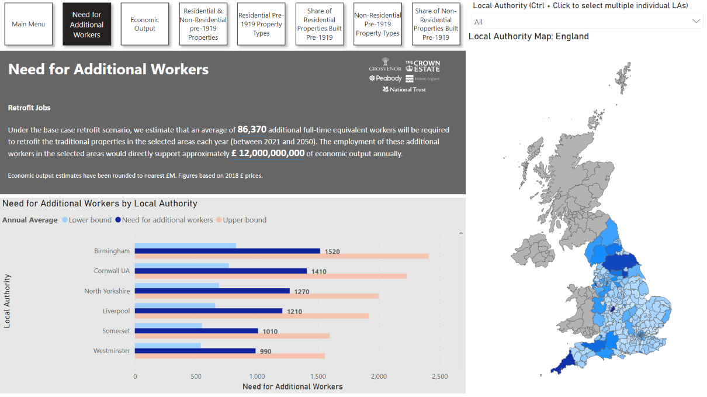
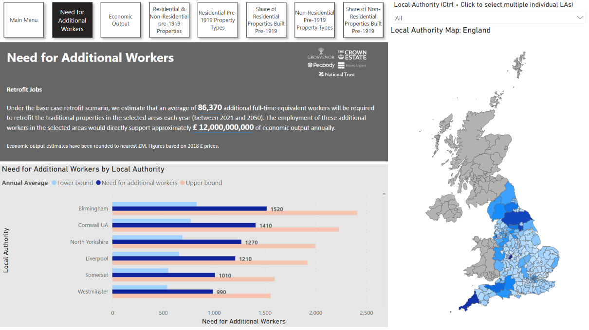
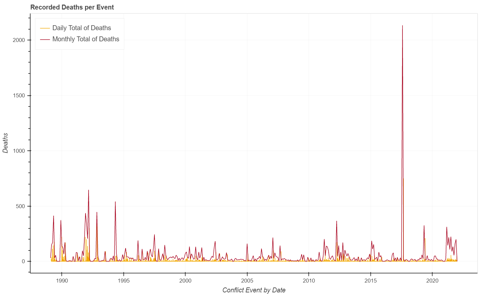

2024
As part of the high-priority data collection for a major annual data
publication, “Heritage Counts”, I identified and automated key processes
using Python, leading to significant efficiency gains.
 

Power BI dashboard development for internal use at Historic England, to forecast future building labour demands.

The initial goal of the project was to create a straightforward scoring system to assess the quality of footfall datasets using anomaly detection techniques.

I conducted an exploratory analysis of conflict-related deaths in Myanmar using data from the Uppsala Conflict Data Program (UCDP).

Donec eget ex magna. Interdum et malesuada fames ac ante ipsum primis in faucibus. Pellentesque venenatis dolor imperdiet dolor mattis sagittis magna etiam.

Donec eget ex magna. Interdum et malesuada fames ac ante ipsum primis in faucibus. Pellentesque venenatis dolor imperdiet dolor mattis sagittis magna etiam.

Donec eget ex magna. Interdum et malesuada fames ac ante ipsum primis in faucibus. Pellentesque venenatis dolor imperdiet dolor mattis sagittis magna etiam.